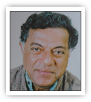

|

|
| ಜನನ |
19 ಮೇ 1938, ಮಥೇರಾನ್, ಮಹಾರಾಷ್ಟ್ರ
|
| ವೃತ್ತಿ |
ಪ್ರಮುಖ ಪಾತ್ರಗಳು
ನಾಟಕಕಾರ, ನಟ, ನಿರ್ದೇಶಕ, ಚಲನಚಿತ್ರ ಲೇಖಕ
- ಕನ್ನಡ ನಾಟಕಕ್ಕೆ ಆಧುನಿಕತೆಯ ಶಕ್ತಿ ತುಂಬಿದ ಪ್ರಮುಖ ಚಿಂತಕ
- ಭಾರತೀಯ ಪುರಾಣ, ಇತಿಹಾಸ ಹಾಗೂ ಸಾಮಾಜಿಕ ವಿಚಾರಗಳನ್ನು ನಾಟಕದ ಮೂಲಕ ಹೊಸ ರೂಪದಲ್ಲಿ ಮಂಡಿಸಿದವರು
- ರಂಗಭೂಮಿ, ಚಲನಚಿತ್ರ, ದೂರದರ್ಶನ — ಎಲ್ಲಾ ಕ್ಷೇತ್ರಗಳಲ್ಲೂ ತಮ್ಮದೇ ಗುರುತು ಮೂಡಿಸಿದವರು
- ಕನ್ನಡದ ಪ್ರಮುಖ ಆಂಗ್ಲಭಾಷಾ ಬರಹಗಾರರಲ್ಲಿ ಒಬ್ಬರು
|
| ಪ್ರಶಸ್ತಿ |
ಗೌರವಗಳು ಮತ್ತು ಪ್ರಶಸ್ತಿಗಳು
- ಜ್ಞಾನಪೀಠ ಪ್ರಶಸ್ತಿ (1998)
- ಪದ್ಮಶ್ರೀ
- ಪದ್ಮಭೂಷಣ
- ಸಾಹಿತ್ಯ ಅಕಾಡೆಮಿ ಪ್ರಶಸ್ತಿ
- ಫಿಲ್ಮ್ಫೇರ್ ಪ್ರಶಸ್ತಿ (ಹಿಂदी ಚಿತ್ರರಂಗಕ್ಕೆ)
|
| ಮರಣ |
ಅಂತ್ಯ ಮತ್ತು ಪರಂಪರೆ
10 ಜೂನ್ 2019, ಬೆಂಗಳೂರು
- ಬಹುಮುಖ ಪ್ರತಿಭೆಯ ನಷ್ಟಕ್ಕೆ ಭಾರತದೆಲ್ಲೆಡೆ ಸಂತಾಪ
- ಕರ್ನಾಟಕದ ಆಧುನಿಕ ರಂಗಭೂಮಿಯ ಕೇಂದ್ರೀಯ ವ್ಯಕ್ತಿತ್ವ
- ಅವರ ಕೃತಿಗಳು ಇಂದಿಗೂ ಭಾರತೀಯ ವಿಶ್ವವಿದ್ಯಾಲಯಗಳಲ್ಲಿ ಅಧ್ಯಯನ ವಸ್ತು
|
| ಸಂಕ್ಷಿಪ್ತ ವಿವರಣೆ |
ಸಾರಾಂಶ (ಸಾಹಿತ್ಯ ಮತ್ತು ಶೈಲಿ)
ಗಿರೀಶ್ ಕಾರ್ನಾಡ್ ಆಧುನಿಕ ಕನ್ನಡ ನಾಟಕದ ಪುನರುಜ್ಜೀವನಕ್ಕೆ ಕಾರಣರಾದ ಸೃಜನಶೀಲ ಕಲಾವಿದ.
- ಪುರಾಣ–ಇತಿಹಾಸಗಳಿಗೆ ಹೊಸ ಸಾಮಾಜಿಕ ಆಯಾಮಗಳನ್ನು ನೀಡಿದ ನಾಟಕಕಾರ
- ರಾಜಕೀಯ, ಮಾನವತಾವಾದ, ವ್ಯಕ್ತಿತ್ವದ ಸಂಕಟ — ಅವರ ಮುಖ್ಯ ವಿಷಯಗಳು
- ಭಾರತೀಯ ನಾಟಕವನ್ನು ವಿಶ್ವಮಟ್ಟಕ್ಕೆ ಪರಿಚಯಿಸಿದ ಪ್ರಮುಖ ವ್ಯಕ್ತಿ
ಪ್ರಮುಖ ನಾಟಕಗಳು
- ತುಗಲಕ್
- ಹಯವದನ
- ನಾಗಮಂಡಲ
- ಯಯಾತಿ
- ಅನುವಾದಿತ — “ಭೂಮಿಜಾ” ಮತ್ತು “ಋತುಚಕ್ರ”
ಪ್ರಭಾವ ಮತ್ತು ಪರಂಪರೆ
- ಭಾರತೀಯ ರಂಗಭೂಮಿ–ಸಾಹಿತ್ಯದ ಪ್ರಮುಖ ಚಿಂತಕರಲ್ಲಿ ಒಬ್ಬರು
- ಕನ್ನಡ ನಾಟಕಕ್ಕೆ ನವೀನ ಭಾಷೆ ಮತ್ತು ರಚನಾ ಶೈಲಿ ನೀಡಿದರು
- ಇಂದಿಗೂ ಅನೇಕ ವಿಶ್ವವಿದ್ಯಾಲಯಗಳಲ್ಲಿ ಅವರ ನಾಟಕಗಳು ಅಧ್ಯಯನ ವಸ್ತು
|